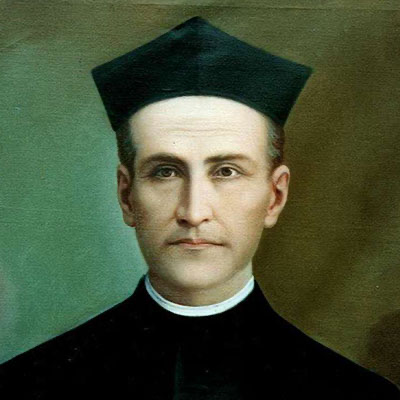

Isusovački blaženici
Svećenik · Odgojitelj · Mučenik
Bl. Emilio Moscoso Cárdenas
1846.–1897.
Ekvadorski isusovac Emilio Moscoso Cárdenas ostao je uz učenike i zajednicu u Riobambi tijekom progona. Ubijen je dok je u sobi molio.
Tekst je preveden i prilagođen uz pomoć umjetne inteligencije.

Izvor slike
- Spomendan
- 4. svibnja
- Zaštitništvo
- Nije navedeno u izvoru
- Životni vijek
- 1846.–1897.
- Djelovanje
- Mladi i odgoj · Obrazovanje i poučavanje vjere · Progoni i progonstvo · Mučeništvo
- Razdoblje
- 19. stoljeće
- Rođenje
- 21. travnja 1846., Cuenca, Ekvador
- Svećeničko ređenje
- 1876.
- Završni zavjeti
- 8. rujna 1879.
- Napomena o izvoru
- Zaglavlje navodi 04/05/1897; životopis izričito opisuje ubojstvo 4. svibnja 1897.
- Datum smrti
- 4. svibnja 1897.
U kalendaru zbirke koristi se dan smrti. Taj datum nije zasebna potvrda liturgijskoga spomendana.
Životopis
Emilio Moscoso Cárdenas rođen je 21. travnja 1846. u Cuenci u Ekvadoru. Odrastao je u brojnoj, vjerničkoj obitelji; posebno ga je oblikovala pobožnost prema Euharistiji. Započeo je studij prava, ali je prevladao poziv na redovnički život. Unatoč početnom očevu protivljenju, 1864. stupio je u isusovački novicijat, a prve je zavjete položio 1866. u Quitu.
Njegova se formacija isprepletala s odgojem mladih. Predavao je u Riobambi i Guayaquilu, teologiju studirao u Ekvadoru i Francuskoj, a svećeničko ređenje primio 1. studenoga 1876. Treću probaciju obavio je u Manresi. Od 1879. djelovao je u Limi, u zavodu i školi Bezgrješnoga začeća, te ondje položio završne zavjete. Nakon povratka u Ekvador služio je u Quitu, a od 1889. ponovno u Riobambi, gdje su mu povjerene zajedničke, duhovne i pastoralne zadaće.
Kao rektor kolegija svetoga Filipa Nerija odgovarao je za školu i njezinu odgojnu djelatnost. Zbog narušena zdravlja više je puta molio razrješenje, ali je nastavio službu. Revolucija 1895. donijela je zakone i postupke usmjerene protiv Crkve. Zajednica je u Riobambi ostala uz učenike i stanovnike unatoč pritiscima. Kada je potkraj travnja 1897. zatvoren mjesni biskup Arsenio Andrade, napetost je dodatno porasla. Moscoso je posjećivao zatočenu subraću i vraćao se svojoj zajednici.
U zoru 4. svibnja 1897. vojnici su provalili u kolegij. U kapeli je oskvrnuta Euharistija, a zatim su tražili redovnike. Rektora su pronašli na koljenima pred raspelom, s krunicom u ruci, i ubili ga iz neposredne blizine. Njegovo mučeništvo povezano je s dugogodišnjim radom učitelja, duhovnika i redovničkoga poglavara, osobito s vjernošću zajednici u vrijeme progona. Blaženim je proglašen 16. studenoga 2019.; Crkva ga časti kao svećenika Družbe Isusove i prvoga ekvadorskog mučenika.
Tekst je preveden i prilagođen uz pomoć umjetne inteligencije.
Pročitaj više na izvornoj stranici ↗